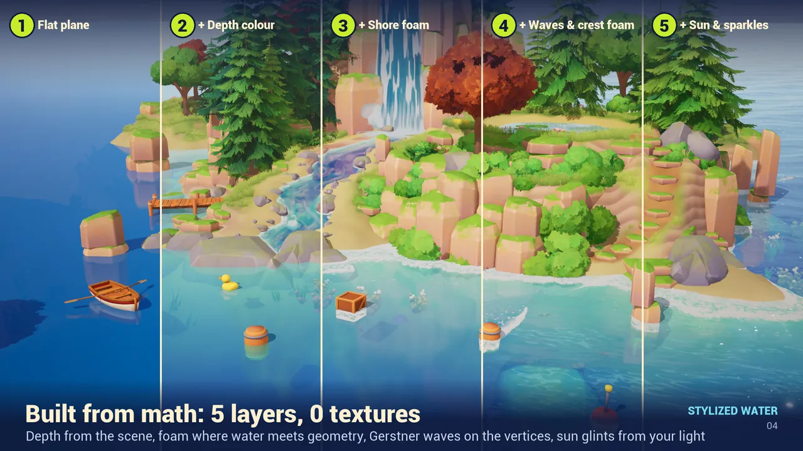
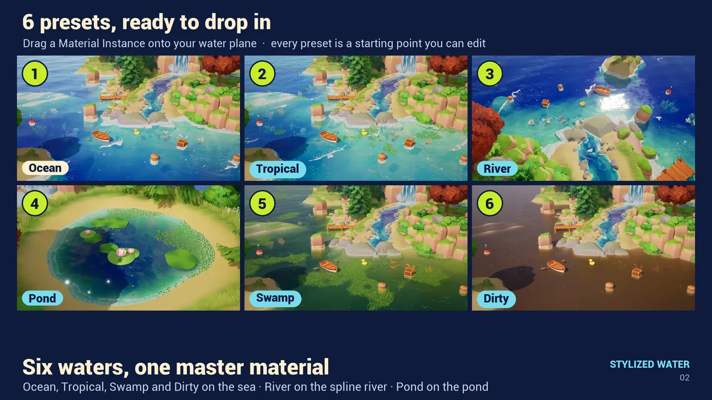
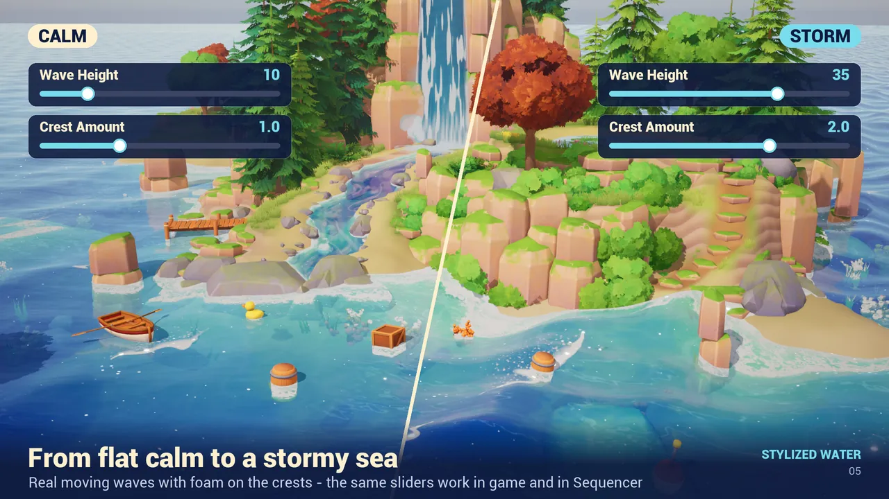
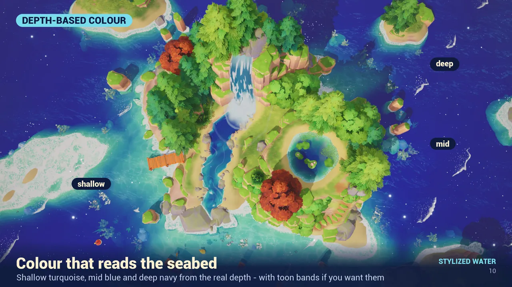
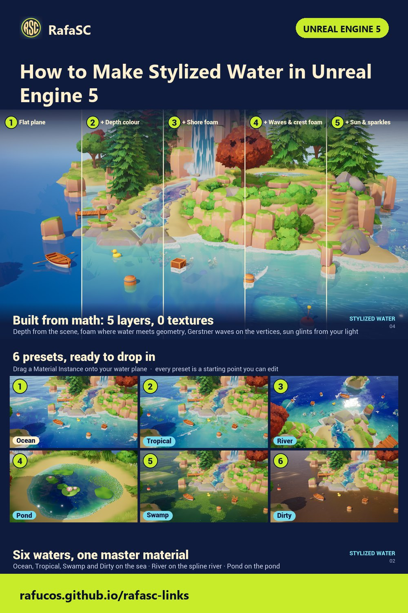

Water
How to make stylized water in Unreal Engine 5
Stylized water in Unreal Engine 5 is a translucent material on a subdivided plane. It colours itself from the depth of the scene behind it, draws foam where the water touches geometry, and moves its vertices to make waves. You can build those layers yourself, or drop in a ready material and tune it.
By RafaSC, 3D and technical artist · Updated · 6 min read

What stylized water is made of
Stylized water is a handful of layers stacked on a flat plane. This is how my own water material is built, with no texture files at all:

- Depth colour. The water reads how far the seabed is behind each pixel and blends a shallow, a mid and a deep colour. Toon bands are optional.
- Shore foam. Where that depth is close to zero, the water is touching something: a beach, a rock, a boat. That is where the foam goes.
- Waves. The vertices of the plane move up and down (World Position Offset). Foam on the crests follows the real wave shape.
- Refraction and ripples. What is under the surface bends a little.
- Sun and sparkles. Glints come from the direction of your Directional Light.
Build it yourself: the order that works
This is the outline, not a node-by-node tutorial. Each layer is easy to start and slow to tune.
- Start with a subdivided plane and a material with Blend Mode Translucent. Waves move vertices, so a quad with four vertices cannot wave.
- Depth first. Compare the depth of the scene behind the surface with the depth of the water pixel. The difference is how much water lies in front of the seabed. Use it to blend your shallow and deep colours.
- Foam from the same value. Take that depth difference, keep only the part near zero and break it up with noise so it does not look like a ruler line.
- Waves in World Position Offset. My material uses Gerstner waves on the vertices. Keep the wave maths in one place: you will need the same formula later if you want objects to float.
- Sun last. Add glints from the light direction once colour and foam already read well without them.
- Measure. A translucent surface that reads scene colour and depth costs more the more of the screen it covers.
The shortcut: drop a plane, drag a preset
If you would rather spend the afternoon on your level, the three steps with Stylized Water Material are:
- Drag
Meshes/SM_SW_WaterPlane_20m(or_5m) into the level and scale it. The demo tiles several planes for the sea. - Drag a preset from
Materials/Presets/onto the plane. - Make sure the level has a Directional Light. The water reads the sun direction from it (parameter
UseSceneSun).

| Preset | Look | Use it for |
|---|---|---|
| MI_SW_01_Ocean | Open sea, depth bands, whitecaps, sparkles | Seas, large lakes |
| MI_SW_02_Tropical | Turquoise shallows, coloured seabed patches | Beaches, lagoons |
| MI_SW_03_Pond | Calm, clear, lily pads | Ponds, small pools |
| MI_SW_04_Swamp | Green, floating duckweed | Swamps, still water |
| MI_SW_05_River | Flowing water with streaks | Rivers |
| MI_SW_06_Dirty | Murky, brownish | Canals, puddles, mud |
The parameters you will touch first
Open any Material Instance: parameters are grouped and numbered, 15 groups in order.
- 01 Water Color:
ShallowColor,MidColor,DeepColor,DepthRange(how fast it gets deep),Clarity(how far you see the bottom),Transparency. - 04 Shore Foam and 05 Shore Foam Bubbles:
FoamAmount,FoamWidth,FoamColor. - 06 Wave Crest Foam:
CrestAmount,CrestDensity. - 07 Waves:
WaveHeight,WaveLength,WaveSteepness,WaveDirection,WaveSpeed. - 10 Sparkles & Sun:
SparkleIntensityis HDR, so it blooms if your post-process has Bloom on.
Set a group's main amount to 0 to fade that effect out. To keep your own water, right-click a preset, choose Create Material Instance and change only what you want.


Limits and cost
- Tested on Unreal Engine 5.8 (DirectX 12 / Shader Model 6, Windows). Other engine versions were not tested.
- Version 1.0 has no underwater post-process and no water-line effect.
- If you replace the water mesh, it needs enough vertices for the waves. The supplied planes are already subdivided.
- Measured on an RTX 3080 in a 1324x745 editor viewport, Translucency pass: 1.1 ms median for the demo hero view and 0.4 ms for the pond. Your numbers will vary with resolution and scene.
Next steps: make objects float on the water and draw a river and a waterfall with splines.
Frequently asked questions
Does stylized water in UE5 need textures?
Not necessarily. Stylized Water Material is fully procedural: 0 textures. Depth comes from the scene, foam from where the water meets geometry, and waves from maths on the vertices.
Why does my water plane not show waves?
Waves move the vertices with World Position Offset, so the mesh needs enough vertices. A default plane with four vertices cannot wave. Use a subdivided plane.
Which Unreal Engine version does Stylized Water Material support?
It was tested on Unreal Engine 5.8 (DirectX 12 / SM6, Windows). Other engine versions were not tested.
How expensive is it?
Measured on an RTX 3080 (1324x745 editor viewport): about 1.1 ms median Translucency for the demo hero view and about 0.4 ms for the pond.
Related guides

Save this guide for later. Product used on this page: Stylized Water Material.